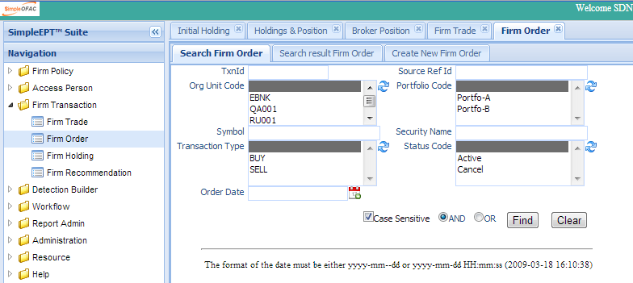
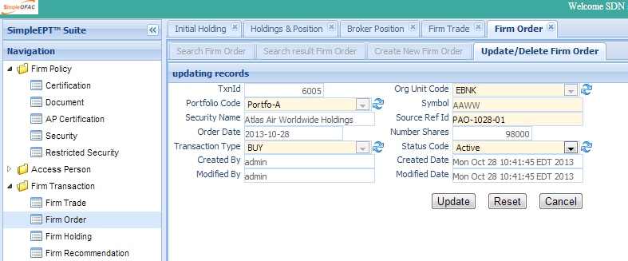
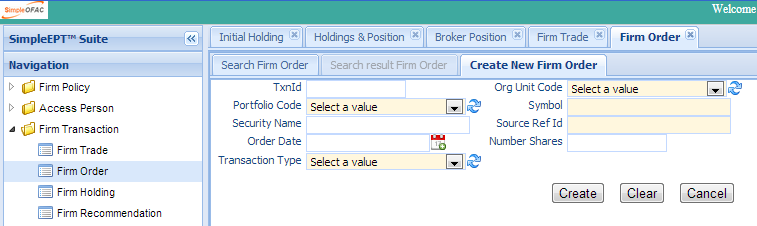

The Firm Order screen manages and maintains Firm’s order transaction. Click the Firm Order in the left navigation menu under Firm Transaction and a new Firm Order Tab folder will be created in the right panel. There are 3 sub-Tab folders: Search Firm Order, Search Result Firm Order and Create New Firm Order.
Search Criteria
| Field Name | Description |
|---|---|
| TxnId | The unique system generated number. |
| Source Ref Id | The Reference ID from other system. |
| Org Unit Code | The org unit this Firm Order belongs to. |
| Portfolio Code | The portfolio this order belongs to. |
| Symbol | The symbol of the security. |
| Security Name | The name of the security. |
| Transaction Type | The Transaction Type: buy or sell. |
| Order Date | The order date. |
| Status Code | The status of the transaction; eg active, cancel, etc. |
| AND | Select AND radio box if you want those criteria added together. |
| OR | Select OR radio box if you want to get the result if either of the criteria is met |
The top part is the table which shows the list of the Firm Order that meet the search criteria. The bottom part is the details of the selected entry.
Double Click the selected record in the table to modify this entry. A new tab folder “Update/Delete Firm Order” will be added, as shown below.
Select the “Create New Firm Order” Tab to create a new entry.
| Field Name | Description |
|---|---|
| TxnId | The unique system generated number. |
| Org Unit Code | The org unit this Firm Order belongs to. |
| Portfolio Code | The portfolio this order belongs to. |
| Symbol | The symbol of the security. |
| Security Name | The name of the security. |
| Source Ref Id | The Reference ID from other system. |
| Order Date | The order date. |
| Number of shares | The number of shares traded. |
| Transaction Type | The Transaction Type: buy or sell. |
Note
The status code for newly created firm order transaction is active.